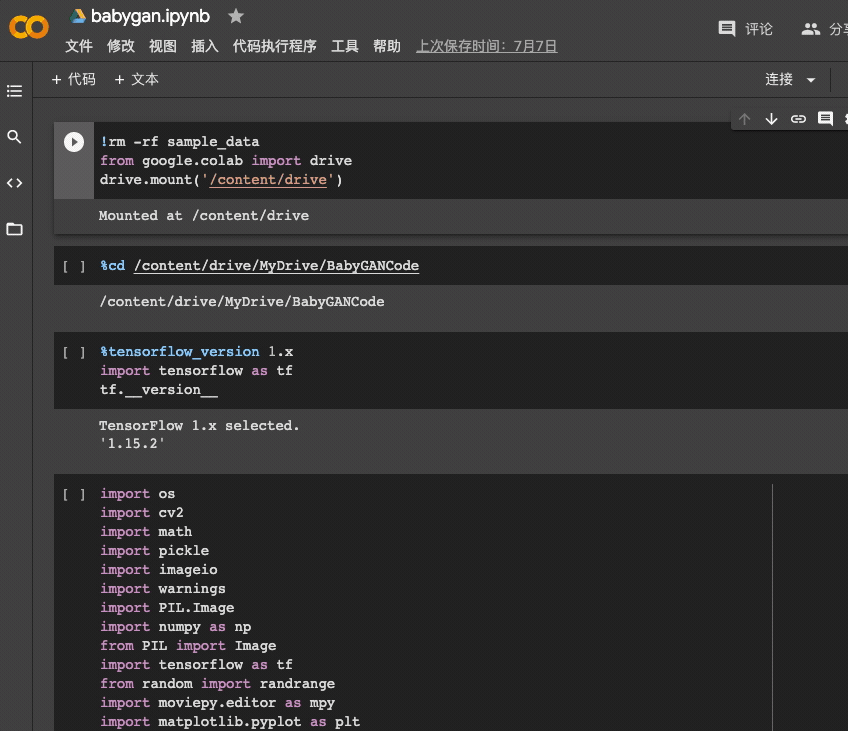

缘起于前段时间看的一篇《新垣结衣的孩子长啥样？用 StyleGAN 开源项目，一次看个够》的公众号文章
文章的内容是用男，女的照片来预测孩子的长相，处于好奇正好今天有时间，研究了一下。
需要使用的技术：
Tensorflow 谷歌推出的机器学习的框架
Python 编程语言
Colab 在线机器学习环境
一、环境准备
1、转存训练数据
将谷歌网盘已经训练好的模型数据转存到自己的谷歌网盘
2、打开Colab 选择打开GPU,并连接服务

二、加入代码
注意，每一个条目都是新添加的一段代码。
1、装载谷歌网盘
将谷歌网盘添加到项目中，因为colab并不会保存结果信息，我们将项目在网盘中保存。
点击添加代码，将如下代码加入并运行1
2
3!rm -rf sample_data
from google.colab import drive
drive.mount('/content/drive')
2、将TensorFlow的版本降为1.x1
2
3%tensorflow_version 1.x
import tensorflow as tf
tf.__version__
3、Clone代码
这一步非常重要，建议跳过此步骤，先clone到本地，修改代码中的一些模型引用路径，然后在放到谷歌网盘1
!git clone https://github.com/tg-bomze/BabyGAN /content/drive/MyDrive/BabyGANCode
4、进入工作目录1
2%cd /content/drive/MyDrive/BabyGANCode
!mkdir aligned_images data father_image mother_image
5、准备照片
准备男女双方图片，拓展名无所谓，但名称必须是father和mother，分别拖入谷歌网盘的的father_image和mother_image文件夹
6、运行环境1
2
3
4
5
6
7
8
9
10
11
12
13
14
15
16
17
18
19
20
21
22
23
24
25
26
27
28
29
30
31
32
33
34
35
36
37
38
39
40
41
42
43
44
45
46
47
48
49
50
51
52
53
54
55
56
57
58
59
60
61
62
63
64
65
66
67
68
69
70
71
72
73
74
75import os
import cv2
import math
import pickle
import imageio
import warnings
import PIL.Image
import numpy as np
from PIL import Image
import tensorflow as tf
from random import randrange
import moviepy.editor as mpy
import matplotlib.pyplot as plt
from IPython.display import clear_output
from IPython.display import display
from moviepy.video.io.ffmpeg_writer import FFMPEG_VideoWriter
warnings.filterwarnings("ignore")
def get_watermarked(pil_image: Image) -> Image:
try:
image = cv2.cvtColor(np.array(pil_image), cv2.COLOR_RGB2BGR)
(h, w) = image.shape[:2]
image = np.dstack([image, np.ones((h, w), dtype="uint8") * 255])
pct = 0.08
full_watermark = cv2.imread('./media/logo.png', cv2.IMREAD_UNCHANGED)
(fwH, fwW) = full_watermark.shape[:2]
wH = int(pct * h*2)
wW = int((wH * fwW) / fwH*0.1)
watermark = cv2.resize(full_watermark, (wH, wW), interpolation=cv2.INTER_AREA)
overlay = np.zeros((h, w, 4), dtype="uint8")
(wH, wW) = watermark.shape[:2]
overlay[h - wH - 10 : h - 10, 10 : 10 + wW] = watermark
output = image.copy()
cv2.addWeighted(overlay, 0.5, output, 1.0, 0, output)
rgb_image = cv2.cvtColor(output, cv2.COLOR_BGR2RGB)
return Image.fromarray(rgb_image)
except: return pil_image
def generate_final_images(latent_vector, direction, coeffs, i):
new_latent_vector = latent_vector.copy()
new_latent_vector[:8] = (latent_vector + coeffs*direction)[:8]
new_latent_vector = new_latent_vector.reshape((1, 18, 512))
generator.set_dlatents(new_latent_vector)
img_array = generator.generate_images()[0]
img = PIL.Image.fromarray(img_array, 'RGB')
if size[0] >= 512: img = get_watermarked(img)
img_path = "./for_animation/" + str(i) + ".png"
img.thumbnail(animation_size, PIL.Image.ANTIALIAS)
img.save(img_path)
face_img.append(imageio.imread(img_path))
clear_output()
return img
def generate_final_image(latent_vector, direction, coeffs):
new_latent_vector = latent_vector.copy()
new_latent_vector[:8] = (latent_vector + coeffs*direction)[:8]
new_latent_vector = new_latent_vector.reshape((1, 18, 512))
generator.set_dlatents(new_latent_vector)
img_array = generator.generate_images()[0]
img = PIL.Image.fromarray(img_array, 'RGB')
if size[0] >= 512: img = get_watermarked(img)
img.thumbnail(size, PIL.Image.ANTIALIAS)
img.save("face.png")
return img
def plot_three_images(imgB, fs = 10):
f, axarr = plt.subplots(1,3, figsize=(fs,fs))
axarr[0].imshow(Image.open('./aligned_images/father_01.png'))
axarr[0].title.set_text("Father's photo")
axarr[1].imshow(imgB)
axarr[1].title.set_text("Child's photo")
axarr[2].imshow(Image.open('./aligned_images/mother_01.png'))
axarr[2].title.set_text("Mother's photo")
plt.setp(plt.gcf().get_axes(), xticks=[], yticks=[])
plt.show()
7、读取变量信息1
2
3
4
5
6
7
8
9
10import dnnlib
import dnnlib.tflib as tflib
from encoder.generator_model import Generator
age_direction = np.load('./ffhq_dataset/latent_directions/age.npy')
horizontal_direction = np.load('./ffhq_dataset/latent_directions/angle_horizontal.npy')
vertical_direction = np.load('./ffhq_dataset/latent_directions/angle_vertical.npy')
eyes_open_direction = np.load('./ffhq_dataset/latent_directions/eyes_open.npy')
gender_direction = np.load('./ffhq_dataset/latent_directions/gender.npy')
smile_direction = np.load('./ffhq_dataset/latent_directions/smile.npy')
8、截取人脸信息1
2
3
4
5
6
7
8
9
10
11
12
13
14
15
16
17
18
19!python align_images.py ./father_image ./aligned_images
# clear_output()
if os.path.isfile('./aligned_images/father_01.png'):
pil_father = Image.open('./aligned_images/father_01.png')
(fat_width, fat_height) = pil_father.size
resize_fat = max(fat_width, fat_height)/256
display(pil_father.resize((int(fat_width/resize_fat), int(fat_height/resize_fat))))
else: raise ValueError('No face was found or there is more than one in the photo.')
!python align_images.py ./mother_image ./aligned_images
# clear_output()
if os.path.isfile('./aligned_images/mother_01.png'):
pil_mother = Image.open('./aligned_images/mother_01.png')
(mot_width, mot_height) = pil_mother.size
resize_mot = max(mot_width, mot_height)/256
display(pil_mother.resize((int(mot_width/resize_mot), int(mot_height/resize_mot))))
else: raise ValueError('No face was found or there is more than one in the photo.')
9、提取信息1
2
3
4
5
6
7
8
9
10
11
12
13
14
15
16
17
18
19
20
21
22
23
24
25
26
27
28
29# tf.reset_default_graph()
!python encode_images.py \
--early_stopping False \
--lr=0.25 \
--batch_size=1 \
--iterations=200 \
--output_video=False \
--model_url='../BabyGAN/karras2019stylegan-ffhq-1024x1024.pkl' \
--architecture='../BabyGAN/vgg16_zhang_perceptual.pkl' \
./aligned_images \
./generated_images \
./latent_representations
# tflib.init_tf()
# tf.compat.v1.ConfigProto(log_device_placement=True,allow_soft_placement=True)
# URL_FFHQ = "/content/drive/MyDrive/BabyGAN/karras2019stylegan-ffhq-1024x1024.pkl"
# with dnnlib.util.open_url(URL_FFHQ, cache_dir='cache') as f:
# generator_network, discriminator_network, Gs_network = pickle.load(f)
# generator = Generator(Gs_network, batch_size=1, randomize_noise=False)
# model_scale = int(2*(math.log(1024,2)-1))
# # clear_output()
if len(os.listdir('./generated_images')) == 2:
first_face = np.load('./latent_representations/father_01.npy')
second_face = np.load('./latent_representations/mother_01.npy')
else: raise ValueError('Something wrong. It may be impossible to read the face in the photos. Upload other photos and try again.')
10、-1
2
3
4
5
6
7
8
9
10
11
12
13
14
15
16
17
18
19
20
21
22
23
24# 生成一个孩子的脸
# genes_influence: 哪个父母的基因会占优势，以及占多大的优势。
# 越接近0，父亲的影响越大；越接近1，母亲的影响越大。
genes_influence = 0.6 # 取值在 0.01 ~ 0.99，可以自行调整
# person_age: 孩子的大致年龄
person_age = 10 # 取值在 10 ~ 50，可以自行调整（仅整数）
# resolution: 下载图像的分辨率
resolution = "512" # 取值范围： [256, 512, 1024]
# style: 图片风格（不改变生成图片人物样貌，仅改变亮度、对比度等图片特征）
style = "Default" # 取值范围： ["Default", "Father's photo", "Mother's photo"]
if style == "Father's photo":
lr = ((np.arange(1,model_scale+1)/model_scale)**genes_influence).reshape((model_scale,1))
rl = 1-lr
hybrid_face = (lr*first_face) + (rl*second_face)
elif style == "Mother's photo":
lr = ((np.arange(1,model_scale+1)/model_scale)**(1-genes_influence)).reshape((model_scale,1))
rl = 1-lr
hybrid_face = (rl*first_face) + (lr*second_face)
else: hybrid_face = ((1-genes_influence)*first_face)+(genes_influence*second_face)
intensity = -((person_age/5)-6)
size = int(resolution), int(resolution)
face = generate_final_image(hybrid_face, age_direction, intensity)
plot_three_images(face, fs = 15)
11、-1
2
3
4
5
6
7
8
9
10
11
12
13
14
15
16
17
18
19
20
21
22
23
24
25
26
27
28
29
30
31
32# 生成孩子性别平稳变化的动画。
# person_age: 孩子的大致年龄
person_age = 40 # 取值在 10 ~ 50，可以自行调整（仅整数）
# animation_resolution: 生成动画的分辨率
animation_resolution = "512" # 取值范围： [256, 512, 1024]
# frames_number: 帧数
# 帧数越高，动画帧与帧之间的过渡越平滑。
frames_number = 50 # 取值在 10 ~ 50，可以自行调整（仅整数）
!rm -rf ./for_animation
!mkdir ./for_animation
face_img = []
intensity = -((person_age/5)-6)
animation_size = int(animation_resolution), int(animation_resolution)
for i in range(1, frames_number):
gender_influence = i/frames_number
hybrid_face = ((1-gender_influence)*first_face)+(gender_influence*second_face)
face = generate_final_images(hybrid_face, age_direction, intensity, i)
clear_output()
print(str(i) + " of {} photo generated".format(str(frames_number)))
for j in reversed(face_img):
face_img.append(j)
animation_name = str(person_age) + "_years.mp4"
imageio.mimsave('./for_animation/'+animation_name, face_img)
clear_output()
display(mpy.ipython_display('./for_animation/'+animation_name, height=400, autoplay=1, loop=1))
12、-1
2
3
4
5
6
7
8
9
10
11
12
13
14
15
16
17
18
19
20
21
22
23
24
25
26
27
28
29
30
31
32
33
34
35
36
37# 生成孩子年龄平稳变化的动画。
# gender_influence: 哪个父母的基因会占优势，以及占多大的优势。
# 越接近0，父亲的影响越大；越接近1，母亲的影响越大。
gender_influence = 0.6 # 取值在 0.01 ~ 0.99，可以自行调整
# animation_resolution: 生成动画的分辨率
animation_resolution = "512" # 取值范围： [256, 512, 1024]
# frames_number: 帧数
# 帧数越高，动画帧与帧之间的过渡越平滑。
frames_number = 50 # 取值在 10 ~ 50，可以自行调整（仅整数）
!rm -rf ./for_animation
!mkdir ./for_animation
face_img = []
hybrid_face = ((1-gender_influence)*first_face)+(gender_influence*second_face)
animation_size = int(animation_resolution), int(animation_resolution)
for i in range(0, frames_number, 1):
intensity = (8*(i/(frames_number-1)))-4
generate_final_images(hybrid_face, age_direction, intensity, i)
clear_output()
print(str(i) + " of {} photo generated".format(str(frames_number)))
for j in reversed(face_img):
face_img.append(j)
if gender_influence <= 0.3:
animation_name = "boy.mp4"
elif gender_influence >= 0.7:
animation_name = "girl.mp4"
else:
animation_name = "animation.mp4"
imageio.mimsave('./for_animation/'+animation_name, face_img)
clear_output()
display(mpy.ipython_display('./for_animation/'+animation_name, height=400, autoplay=1, loop=1))
13、-1
2
3
4
5
6
7
8
9
10
11
12
13
14
15
16
17
18
19
20
21
22
23
24
25
26
27
28
29
30
31
32
33
34
35
36
37
38
39# 改变孩子脸部的参数
# genes_influence: 哪个父母的基因会占优势，以及占多大的优势。
# 越接近0，父亲的影响越大；越接近1，母亲的影响越大。
genes_influence = 0.3 # 取值在 0.01 ~ 0.99，可以自行调整
# style: 图片风格（不改变生成图片人物样貌，仅改变亮度、对比度等图片特征）
style = "Default" # 取值范围： ["Default", "Father's photo", "Mother's photo"]
# resolution: 下载图像的分辨率
resolution = "512" # 取值范围： [256, 512, 1024]
# 具体参数调整：（以下参数取值范围均为 -100 ~ 100， 整数）
horizontal = -50 # 横向
vertical = 0 # 纵向
eyes_open = 5 # 眼睛睁开程度
gender = 1 # 性别
smile = 100 # 笑容
age = -100 # 年龄
horizontal_intensity = horizontal/50
vertical_intensity = vertical/50
eyes_open_intensity = -(eyes_open/25)
gender_intensity = gender/100
smile_intensity = smile/100
age_intensity = -(age/25)
if style == "Father's photo":
lr = ((np.arange(1,model_scale+1)/model_scale)**genes_influence).reshape((model_scale,1))
rl = 1-lr
hybrid_face = (lr*first_face) + (rl*second_face)
elif style == "Mother's photo":
lr = ((np.arange(1,model_scale+1)/model_scale)**(1-genes_influence)).reshape((model_scale,1))
rl = 1-lr
hybrid_face = (rl*first_face) + (lr*second_face)
else: hybrid_face = ((1-genes_influence)*first_face)+(genes_influence*second_face)
direction_intensity = (horizontal_direction*horizontal_intensity) + (vertical_direction*vertical_intensity) + (eyes_open_direction*eyes_open_intensity) + (gender_direction*gender_intensity) + (smile_direction*smile_intensity) + (age_direction*age_intensity)
size = int(resolution), int(resolution)
face = generate_final_image(hybrid_face, direction_intensity, 1)
plot_three_images(face, fs = 15)